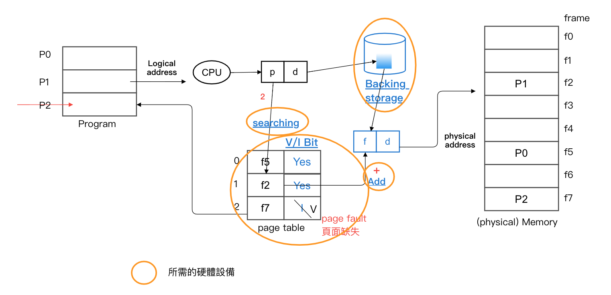
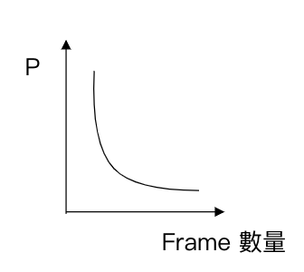
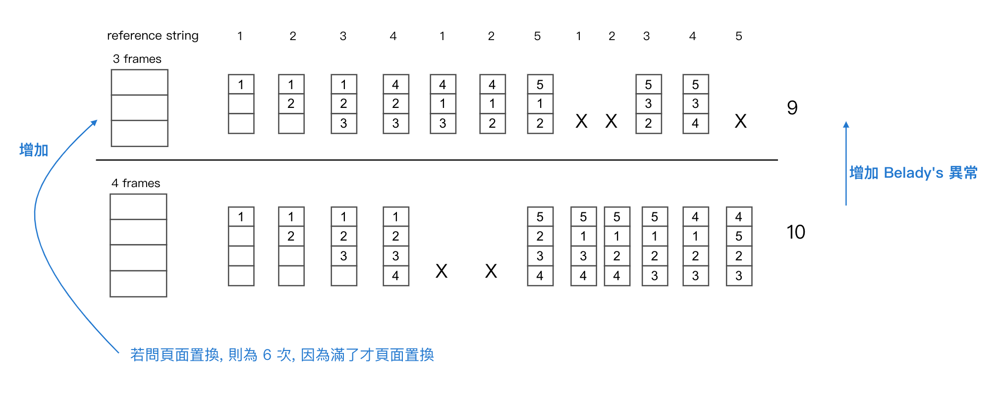
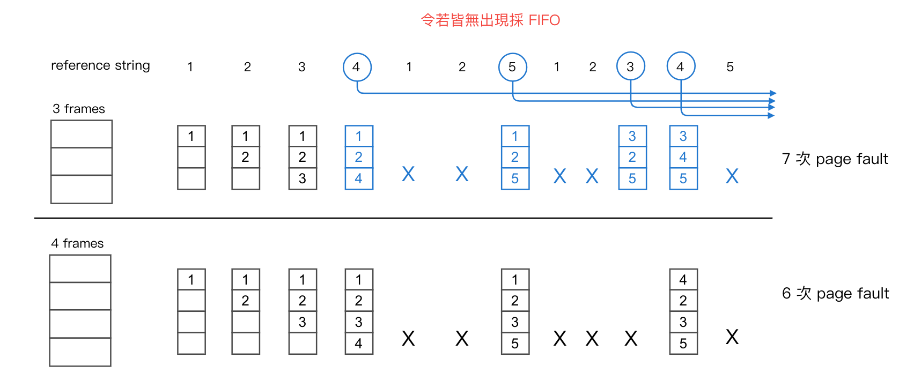
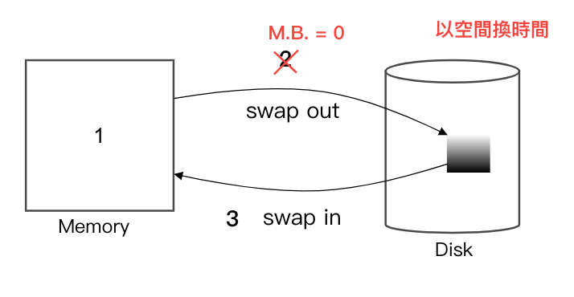
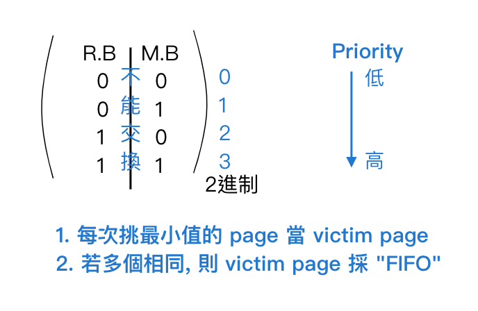
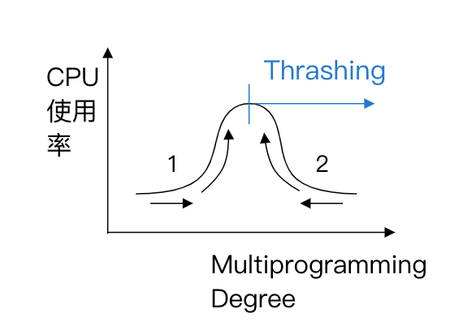
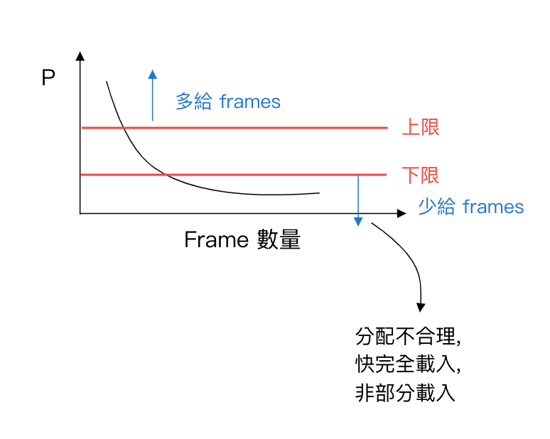
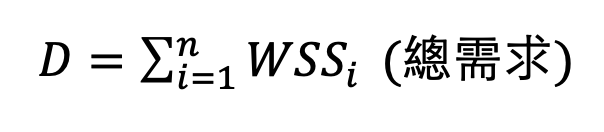

3.8 虛擬記憶體 (Virtual Memory)
- 目的：允許 program size > physical memory size, 而程式仍能執行
- 作法：(部分載入) => 有需要才載入
方法：
1. Dynamic Loading => 為 programmer 的負擔
2. Virtual Memory => 為 O.S. 的負擔
目錄
- Dynamic Loading 動態載入
- Virtual Memory
- Virtual Memory Definition
- Virtual Memory實施方式
- Demand Paging
- Demand Segment
- Page Fault 處理
- Virtual Memory Performance 評估
- P 的影響因素
- frame 數量
- page size 大小
- Program Structure
- Page Replacement algorithm
- FIFO
- OPT
- LRU
- LRU 近似法則
- Frequency of reference
- P 的影響因素
- Demand Paging 的問題：「Thrashing」猛移/輾轉
- 防止 Thrashing 作法
Virtual Memory 實施方式
- Demand Paging
- Def:
- 執行初期只載入部分的 page (有需要, 才載入)
- 當遇到 "所需 page 不在 memory 之中", 則通知 O.S. 做 **page fault (頁面缺失)**處理, 將 lose page 載入 memory 之中
- 作法：
- 在 P.T. 上加入 V/I Bit , 使 memory 可達部分載入之效
- V: Valid (存在 Memory)
- I: Invalid (不存在)
- 圖： 
- Def:
- Demand Segment
Page Fault 處理
- 產生 page fault interrupt 訊號給系統
- find: 找一 free frame
- swap in: 將 lose page 載入 memory 中
- updates: 改 page table 內容
- 將控制權交還 user
Virtual Memory Performance 評估
=> 由 Memory 存取時間來決定 (effect memory access time)
=> (1 - P) x ma + P x PFPT
(1 - P) x ma命中所需- 1 - P 小較好
- ma 短
P x PFPT沒命中- PFPT 長
- 結論 P 越低越好
- P: page fault ratio
- ma: memory access time (硬體不能改)
- PFPT: page fault processing time (不能改)
P 的影響因素為
- frame 數量
 - page size 大小
- 當 page size 越小, 則：
- 缺點：
- Page Table 大小上升
- I/O 次數 上升
- Page fault ratio 上升
- 優點：
- 內部碎裂下降
- 單一 I/O 量 下降
- Program Structure:
=> 說明：program 的設計跟撰寫的 logical 結構亦會影響 P 的大小 - Page Replacement (頁面置換) algorithm
- Def: 當 page fault 時, 又系統的 free frame 已無, 則需：
- 挑出一 victim page (V.P)
- 將 Victim Page swap out
- 將 Lose Page swap in
- 挑選策略分為：
- FIFO
- OPT
- LRU
- LRU 近似法則
- Frequency of reference
- Def: 當 page fault 時, 又系統的 free frame 已無, 則需：
1. FIFO - First In First Out
- 先到達, 先被置換
- 特色：
- easy to implement
- 效益不佳 (page fault ratio 太高, I/O 就多, 效益一定不好)
- 有 Belady's 異常
- 一般：frame 數給越多 => page fault ratio 下降
- 在 Belady's 之下：frame 數給越多 => page fault ratio 上升
- Ex: 採 FIFO, 且用 pure demand paging, page fault 幾次？

2. OPT (Optimal) 最佳法則
- Def: 替換掉 未來長期不用的
- 特質：
- 效益最佳 (因為 page fault ratio 最小)
- No Belady's 異常
- 要預測未來不易 (實作困難)
- 拿來當作理論的依據
- Note: demand paging 載入方式
- pure => 不先載入, 一開始會有 page fault
- prepaging => 做預先載入
- Ex: 呈上例才 OPT

3. LRU (Least Recently Used) => 看過去的歷史 (Stack)
- Def: 替換過去長期不用的 page
- 特色：
- 效果不錯
- No Belady's 異常
- 需 Hardware Support (大量硬體)
- 作法：
- Counting (計數法)
紀錄 page 的參考時間, 替換掉最久的 page - Stack (堆疊法)
採 stack 方式, 最近用的於 top 端, 最底層為下次 swap 之 page
- Counting (計數法)
- Ex: LRU

4. LRU 近似法則
- Def: 由於 LRU 近 花費大量的 Hardware, 故採用 LRU 近似法來模擬 LRU 之效
- 作法：
- Second Chance
- Def: FIFO + 1 個 Reference Bit (0 => 沒被參考, 1 => 有被參考)
- 挑選策略：
- 先用 FIFO 找出 page: P
- check page: P
- 若 R.B = 1 => 改為 0, 往下找
- 若 R.B = 0 => 此為 victim page
- Ex:

- Special Case:
- 當 R.B 全為 0, 或 R.B 全為 1, 代表 => 退化成 FIFO (可能有 Belady's)
- Enhanced Second Chance
- Def: 將 Second Chance + 1 個 Modification Bit (M.B)(想要讓效能變更快)
- Note: M.B
- =0, 代表 page 沒有更動過
- =1, 代表 page 有更動過
- 當 Victim page 之 M.B = 0, 代表內容沒變, 故不需 swap out => performance 上升
- 圖：
- 挑選策略：
- Ex: 問 victim page, 採 second chance 挑, enhanced second chance 挑？

採 second chance 挑 2
enhanced second chance 挑 4
- Second Chance
5. Frequency of reference
- 紀錄各 page 被參考的次數
- 方式：
- LFU => 挑參考值最小的當 victim page
- MFU => 挑參考值最大的當 victim page
Demand Paging 的問題：「Thrashing」猛移/輾轉
- Def: 於 demand paging 下, 當 process frame 不足產生 page fault 又 memory 的 frame亦不足, 此時需搶奪其他 process 的 frame, 導致：
- CPU utilization 下降
- O.S. 引入更多 process
- Page fault 更嚴重
- 圖：
- 問：
- CPU 使用率 10%, How to do ?
- 呈上得知 page fault ratio 90%, How to do ?
Sol:- Multiprogramming Degree 上升 (引入更多 process)
- Multiprogramming Degree 下降 (收回一些 process)
防止 Thrashing 作法
- 控制 page fault ratio 合理 range
- 圖：
- 採 Working Set Model(工作集模式)
- Def: 利用程式執行時有 **"局部性"**之特性, 將各 process 於此 working set 所需之 frame 加以配置, 避免 Thrashing
- Locality: 指程式於一特定時間會集中執行部分的區塊, 而不是 uniform 的執行
- 分：
- Temporal (時間)
- ex: loop, subroutine, stack, counter
- 用到的不久後還會被用到
- Spatial (空間)
- ex: array, 范紐曼, sequential code
- 我被用了, 鄰近的空間很容易也被用到
- Temporal (時間)
- Note:
- O(某符號): Working Set Window
Working set (W.S.) => 指 O 中不同的 page 之集合
Working set size (W.S.S) => 為 W.S 之大小
- O(某符號): Working Set Window
- 判別：令 
- n: process 數
- M: physical free frame 的數量
- 若
D ≤ M=> 依各 process 的 W.S.S 配置 frames 數量 D > M=> stop 部分 process, go to 1.
- Ex:
P1: 1 2 2 1 | 3 4 2 2 | 3 4 1 5
P2: 2 2 1 3 | 3 3 3 3 | 4 2 4 2
P3: 1 2 3 4 | 4 3 3 3 | 3 2 2 1
O(某符號) = 4
Sol:
P1:
W.S. = {1, 2}
W.S.S = 2
P2:
W.S. = {1, 2, 3}
W.S.S = 3
P3:
W.S. = {1, 2, 3, 4}
W.S.S = 4
Total: 9 - 優點：
- 防止 Thrashing
- 對 Prepaging 很有幫助
- 缺點：
- Working set 的追蹤不易
- Working set 之間的 Transfer time 拉長
- Def: 利用程式執行時有 **"局部性"**之特性, 將各 process 於此 working set 所需之 frame 加以配置, 避免 Thrashing